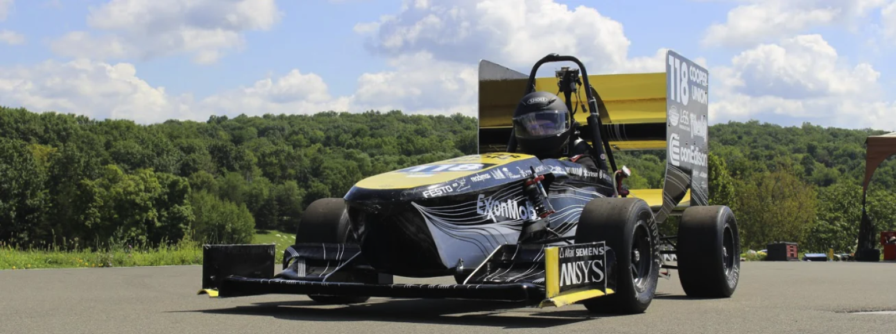

Dynamometer

Dynamometer
In the summer following 11th grade, I worked with The Cooper Union's Formula SAE team. This team works throughout the academic year to design, build, and test a small formula-style race car. At the end of the year, the team's race car competes in a collegiate international racing competition which assesses the race car's design, acceleration, handling, speed, endurance, cost to manufacture, and fuel economy.
I worked on with a team of four summer interns, including myself, and one Cooper Union student who was a project team lead on the Formula SAE team. Our six-week task was to build a brake dynamometer. A brake dynamometer is a machine that simulates a vehicle's braking and provides a diagnostic report about its brake power under certain conditions. This machine was needed by The Cooper Union's Formula SAE team because they are located in downtown Manhattan and have no place to simulate braking for their vehicle. Most other colleges take their vehicle to a large parking lot and test the braking there.
The brake dynamometer has a vehicle's brake assembly mounted onto it. Once properly mounted, a flywheel spins with a required amount of torque to simulate a car's wheel spinning with that torque. The brake assembly then tries to brake and slow down the flywheel until it is stopped. In the process, the brake dynamometer collects live data about the brake pads' temperature, ability to slow down the flywheel, and other useful data.
Throughout the course of that summer I became proficicent with an array of steel-work machines. In addition to the below mentioned machines, I also was involved in computer-numerically-controlled (CNC) machine-work. I used a mill, lathe, band saw, and welder, and I was also involved in threading and boring.
Here is a picture of a part that I designed on SolidWorks and produced using a CNC mill, and below is the SolidWorks schematic I designed that was used to produce it:
Our brake dynamometer is used by The Cooper Union Motorsports Team through today, and it has been instrumental in advancing their braking system over the past few years. Before they had this technology they were unable to conduct any detailed testing on their braking system. Here is the link to The Cooper Union Motorsports team's website: http://fsae.cooper.edu/